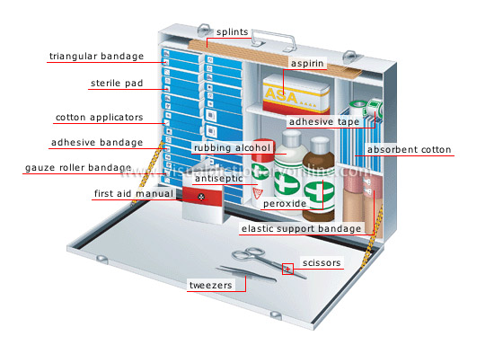

First Aid Kit

A well-stocked first aid kit is a handy thing to have. To be prepared for emergencies:
- Keep a first aid kit in your home and in your car.
- Carry a first aid kit with you or know where you can find one.
- Find out the location of first aid kits where you work..
Whether you buy a first aid kit or put one together, make sure it has all the items you may need:
- Include any personal items such as medications and emergency phone numbers or other items your health-care provider may suggest.
- Check the kit regularly.
- Make sure the flashlight batteries work.
- Check expiration dates and replace any used or out-of-date contents.
The Red Cross recommends that all first aid kits for a family of four include the following:
- 2 absorbent compress dressings (5 x 9 inches)
- 25 adhesive bandages (assorted sizes)
- 1 adhesive cloth tape (10 yards x 1 inch)
- 5 antibiotic ointment packets (approximately 1 gram)
- 5 antiseptic wipe packets
- 2 packets of aspirin (81 mg each)
- 1 blanket (space blanket)
- 1 breathing barrier (with one-way valve)
- 1 instant cold compress
- 2 pair of nonlatex gloves (size: large)
- 2 hydrocortisone ointment packets (approximately 1 gram each)
- Scissors
- 1 roller bandage (3 inches wide)
- 1 roller bandage (4 inches wide)
- 5 sterile gauze pads (3 x 3 inches)
- 5 sterile gauze pads (4 x 4 inches)
- Oral thermometer (non-mercury/nonglass)
- 2 triangular bandages
- Tweezers
- First aid instruction booklet